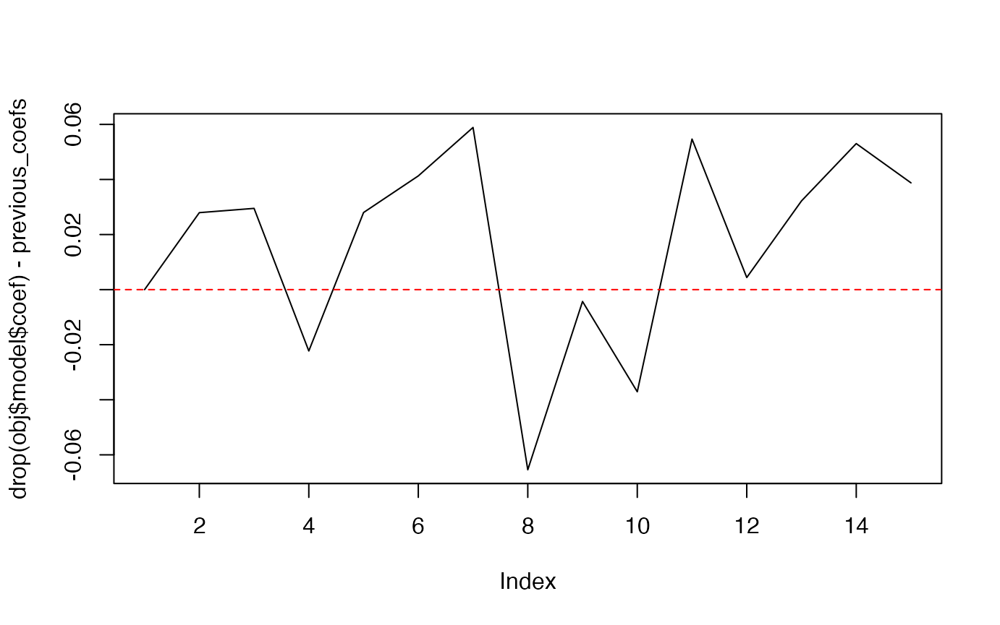
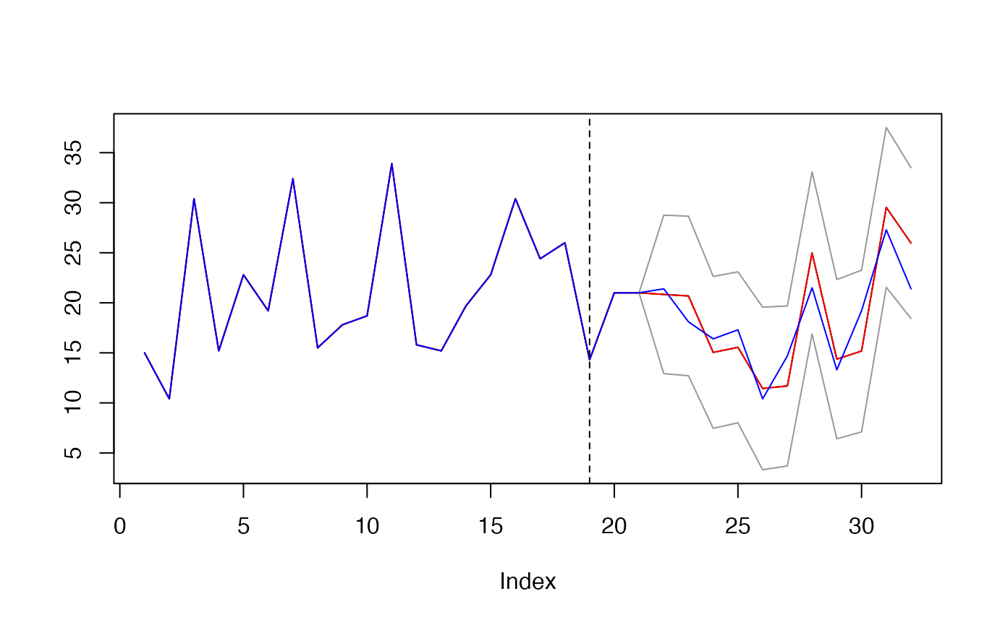

Getting updates
getting-updates-bayesianrvfl.Rmd0 - Packages and data
library(learningmachine)## Loading required package: randtoolbox## Loading required package: rngWELL## This is randtoolbox. For an overview, type 'help("randtoolbox")'.## Loading required package: tseries## Registered S3 method overwritten by 'quantmod':
## method from
## as.zoo.data.frame zoo## Loading required package: memoise## Loading required package: foreach## Loading required package: skimr## Loading required package: snow## Loading required package: doSNOW## Loading required package: iterators## Loading required package: ranger## Loading required package: glmnet## Loading required package: Matrix## Loaded glmnet 4.1-8## Loading required package: xgboost## Loading required package: e1071## Loading required package: MASS## Loading required package: caret## Loading required package: ggplot2## Loading required package: lattice
library(caret)
library(mlbench)
library(palmerpenguins)
X <- as.matrix(mtcars[,-1])
y <- mtcars$mpg
set.seed(123)
(index_train <- base::sample.int(n = nrow(X),
size = floor(0.6*nrow(X)),
replace = FALSE))## [1] 31 15 19 14 3 10 18 22 11 5 20 29 23 30 9 28 8 27 7
X_train <- X[index_train, ]
y_train <- y[index_train]
X_test <- X[-index_train, ]
y_test <- y[-index_train]
dim(X_train)## [1] 19 10
dim(X_test)## [1] 13 10
obj_GCV <- bayesianrvfl::fit_rvfl(x = X_train, y = y_train)
(best_lambda <- obj_GCV$lambda[which.min(obj_GCV$GCV)])## [1] 12.91551 - update RVFL model using Polyak averaging
obj <- learningmachine::Regressor$new(method = "bayesianrvfl",
nb_hidden = 5L)
obj$get_type()## [1] "regression"
obj$get_name()## [1] "Regressor"
obj_GCV <- bayesianrvfl::fit_rvfl(x = X_train, y = y_train)
(best_lambda <- obj_GCV$lambda[which.min(obj_GCV$GCV)])## [1] 12.9155
t0 <- proc.time()[3]
obj$fit(X_train, y_train, reg_lambda = best_lambda)
cat("Elapsed: ", proc.time()[3] - t0, "s \n")## Elapsed: 0.004 s
previous_coefs <- drop(obj$model$coef)
newx <- X_test[1, ]
newy <- y_test[1]
new_X_test <- X_test[-1, ]
new_y_test <- y_test[-1]
t0 <- proc.time()[3]
obj$update(newx, newy, method = "polyak", alpha = 0.6)
cat("Elapsed: ", proc.time()[3] - t0, "s \n")## Elapsed: 0.004 s
summary(previous_coefs)## Min. 1st Qu. Median Mean 3rd Qu. Max.
## -0.96778 -0.51401 -0.16335 -0.05234 0.31900 0.98482## Min. 1st Qu. Median Mean 3rd Qu. Max.
## -0.065436 -0.002152 0.027994 0.015974 0.040033 0.058892
obj$summary(new_X_test, y=new_y_test, show_progress=FALSE)## $R_squared
## [1] 0.6692541
##
## $R_squared_adj
## [1] -2.638205
##
## $Residuals
## Min. 1st Qu. Median Mean 3rd Qu. Max.
## -4.5014 -2.2111 -0.5532 -0.3928 1.3495 3.9206
##
## $Coverage_rate
## [1] 100
##
## $citests
## estimate lower upper p-value signif
## cyl -41.4815528 -43.6039915 -39.3591140 1.306085e-13 ***
## disp -0.5937584 -0.7014857 -0.4860311 1.040246e-07 ***
## hp -1.0226867 -1.2175471 -0.8278263 1.719172e-07 ***
## drat 84.5859637 73.2987057 95.8732217 4.178658e-09 ***
## wt -169.1047879 -189.5595154 -148.6500603 1.469605e-09 ***
## qsec 22.3026258 15.1341951 29.4710566 2.772362e-05 ***
## vs 113.3209911 88.3101728 138.3318093 7.599984e-07 ***
## am 175.1639102 139.5755741 210.7522464 3.304560e-07 ***
## gear 44.3270639 36.1456398 52.5084881 1.240722e-07 ***
## carb -59.6511203 -69.8576126 -49.4446280 5.677270e-08 ***
##
## $signif_codes
## [1] "Signif. codes: 0 ‘***’ 0.001 ‘**’ 0.01 ‘*’ 0.05 ‘.’ 0.1 ‘ ’ 1"
##
## $effects
## ── Data Summary ────────────────────────
## Values
## Name effects
## Number of rows 12
## Number of columns 10
## _______________________
## Column type frequency:
## numeric 10
## ________________________
## Group variables None
##
## ── Variable type: numeric ──────────────────────────────────────────────────────
## skim_variable mean sd p0 p25 p50 p75 p100
## 1 cyl -41.5 3.34 -43.4 -43.4 -43.3 -41.7 -34.5
## 2 disp -0.594 0.170 -0.916 -0.635 -0.505 -0.505 -0.356
## 3 hp -1.02 0.307 -1.44 -1.40 -0.877 -0.768 -0.768
## 4 drat 84.6 17.8 59.5 76.7 89.5 89.5 128.
## 5 wt -169. 32.2 -204. -199. -166. -138. -138.
## 6 qsec 22.3 11.3 13.3 13.3 17.4 29.2 40.1
## 7 vs 113. 39.4 59.6 94.4 94.4 117. 191.
## 8 am 175. 56.0 124. 124. 153. 226. 245.
## 9 gear 44.3 12.9 26.3 38.7 47.9 47.9 76.0
## 10 carb -59.7 16.1 -77.3 -74.6 -58.2 -44.4 -44.4
## hist
## 1 ▇▁▁▁▂
## 2 ▂▁▃▇▁
## 3 ▅▁▁▂▇
## 4 ▂▃▇▁▁
## 5 ▇▁▁▁▇
## 6 ▇▂▁▁▃
## 7 ▁▇▃▁▂
## 8 ▇▁▁▂▃
## 9 ▂▃▇▁▁
## 10 ▇▁▁▁▇
res <- obj$predict(X = new_X_test)
new_y_train <- c(y_train, newy)
plot(c(new_y_train, res$preds), type='l',
main="",
ylab="",
ylim = c(min(c(res$upper, res$lower, y)),
max(c(res$upper, res$lower, y))))
lines(c(new_y_train, res$upper), col="gray60")
lines(c(new_y_train, res$lower), col="gray60")
lines(c(new_y_train, res$preds), col = "red")
lines(c(new_y_train, new_y_test), col = "blue")
abline(v = length(y_train), lty=2, col="black")
mean((new_y_test >= as.numeric(res$lower)) * (new_y_test <= as.numeric(res$upper)))## [1] 12 - update RVFL model using Polyak averaging (Pt.2)
newx <- X_test[2, ]
newy <- y_test[2]
new_X_test <- X_test[-c(1, 2), ]
new_y_test <- y_test[-c(1, 2)]
t0 <- proc.time()[3]
obj$update(newx, newy, method = "polyak", alpha = 0.9)
cat("Elapsed: ", proc.time()[3] - t0, "s \n")## Elapsed: 0.003 s
obj$summary(new_X_test, y=new_y_test, show_progress=FALSE)## $R_squared
## [1] 0.6426871
##
## $R_squared_adj
## [1] -Inf
##
## $Residuals
## Min. 1st Qu. Median Mean 3rd Qu. Max.
## -4.5686 -2.4084 -1.0397 -0.3897 1.5507 4.0215
##
## $Coverage_rate
## [1] 100
##
## $citests
## estimate lower upper p-value signif
## cyl -42.1261096 -44.5327541 -39.7194651 2.932516e-12 ***
## disp -0.6256505 -0.7347381 -0.5165629 1.613495e-07 ***
## hp -1.0139634 -1.2198651 -0.8080617 6.747693e-07 ***
## drat 82.8645391 74.8033348 90.9257434 5.680663e-10 ***
## wt -170.7891742 -193.1932631 -148.3850853 1.053193e-08 ***
## qsec 22.2365552 13.9564091 30.5167012 1.350094e-04 ***
## vs 119.1784891 94.0163626 144.3406157 9.681321e-07 ***
## am 174.2138307 134.1390652 214.2885963 2.127371e-06 ***
## gear 42.7943293 36.9622907 48.6263678 1.523695e-08 ***
## carb -59.4034661 -70.5135723 -48.2933599 3.127231e-07 ***
##
## $signif_codes
## [1] "Signif. codes: 0 ‘***’ 0.001 ‘**’ 0.01 ‘*’ 0.05 ‘.’ 0.1 ‘ ’ 1"
##
## $effects
## ── Data Summary ────────────────────────
## Values
## Name effects
## Number of rows 11
## Number of columns 10
## _______________________
## Column type frequency:
## numeric 10
## ________________________
## Group variables None
##
## ── Variable type: numeric ──────────────────────────────────────────────────────
## skim_variable mean sd p0 p25 p50 p75 p100
## 1 cyl -42.1 3.58 -44.1 -44.1 -44.1 -43.0 -34.9
## 2 disp -0.626 0.162 -0.933 -0.643 -0.514 -0.514 -0.514
## 3 hp -1.01 0.306 -1.47 -1.24 -0.787 -0.787 -0.787
## 4 drat 82.9 12.0 61.2 79.6 91.7 91.7 91.7
## 5 wt -171. 33.3 -210. -204. -142. -142. -142.
## 6 qsec 22.2 12.3 13.2 13.2 13.2 30.7 41.2
## 7 vs 119. 37.5 96.0 96.0 96.0 117. 193.
## 8 am 174. 59.7 123. 123. 123. 233. 247.
## 9 gear 42.8 8.68 27.1 40.4 49.2 49.2 49.2
## 10 carb -59.4 16.5 -78.8 -76.0 -45.1 -45.1 -45.1
## hist
## 1 ▇▁▁▁▂
## 2 ▂▁▁▃▇
## 3 ▃▁▁▂▇
## 4 ▂▁▁▃▇
## 5 ▇▁▁▁▇
## 6 ▇▂▁▁▃
## 7 ▇▃▁▁▂
## 8 ▇▁▁▂▃
## 9 ▂▁▁▃▇
## 10 ▇▁▁▁▇
res <- obj$predict(X = new_X_test)
new_y_train <- c(y_train, y_test[c(1, 2)])
plot(c(new_y_train, res$preds), type='l',
main="",
ylab="",
ylim = c(min(c(res$upper, res$lower, y)),
max(c(res$upper, res$lower, y))))
lines(c(new_y_train, res$upper), col="gray60")
lines(c(new_y_train, res$lower), col="gray60")
lines(c(new_y_train, res$preds), col = "red")
lines(c(new_y_train, new_y_test), col = "blue")
abline(v = length(y_train), lty=2, col="black")
mean((new_y_test >= as.numeric(res$lower)) * (new_y_test <= as.numeric(res$upper)))## [1] 1